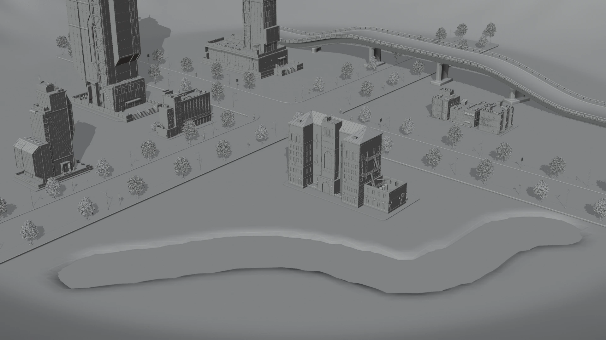
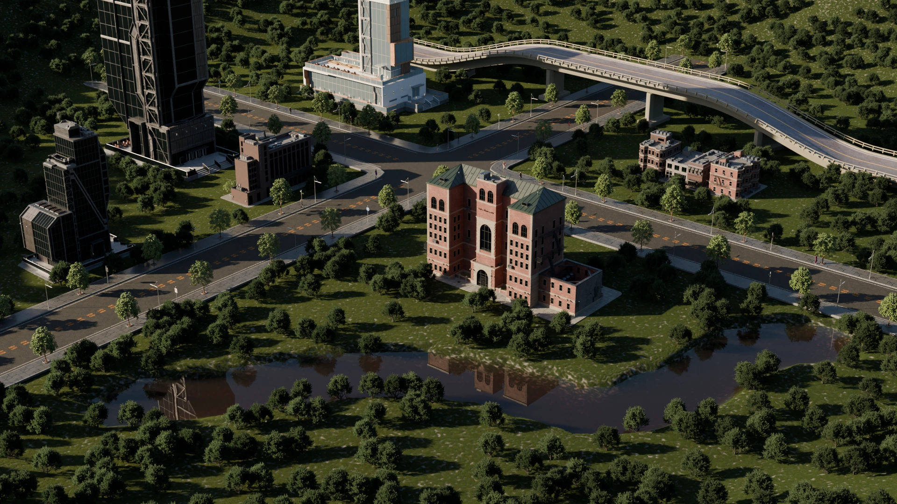
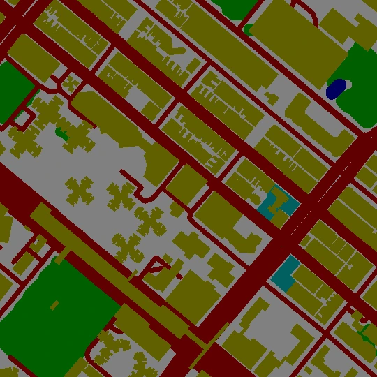
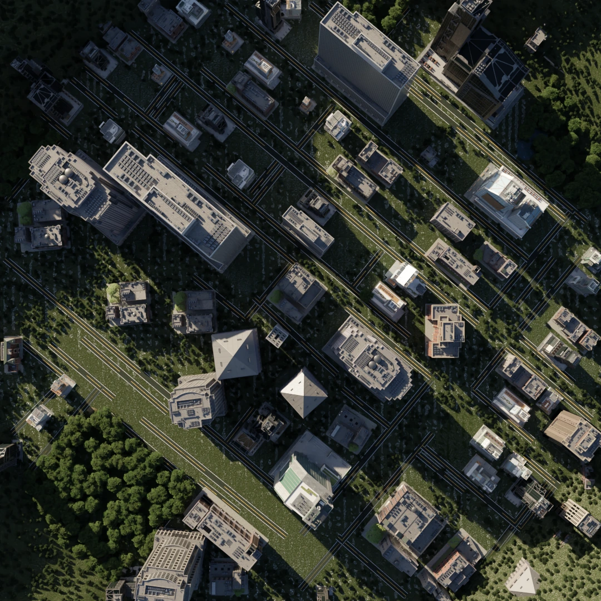
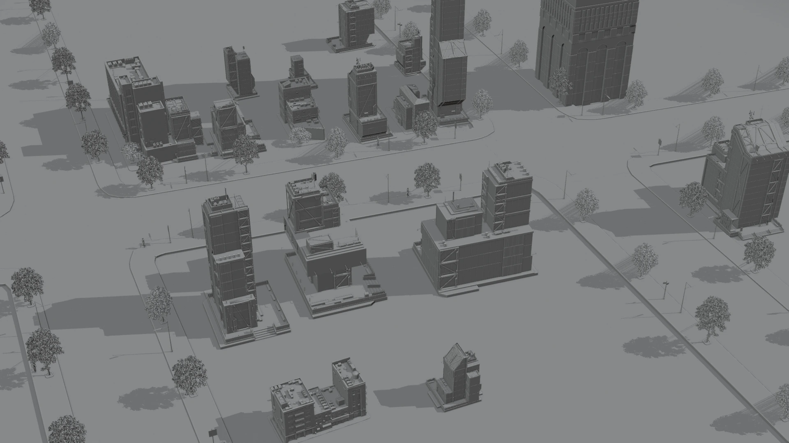
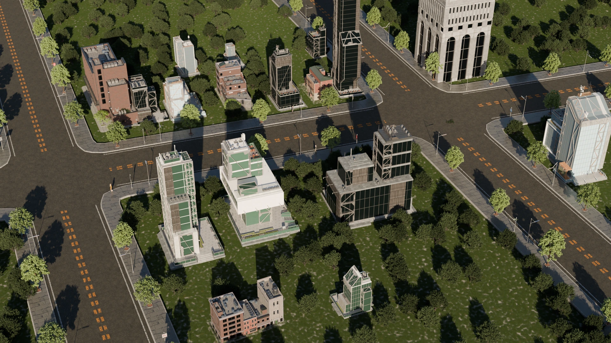

双路径城市生成
支持 OSM 与语义图两种城市生成输入。
OSMSemantic Map
LLM × MCP × PROCEDURAL CITY
LLM-CITYX 是运行在 Blender 4.0+ 内的城市生成插件，将自然语言指令、 OpenStreetMap 与语义图接入 Agent 和 MCP 工具层。


01 · CAPABILITIES
围绕城市数据解析、程序化建模和场景交互形成完整工具链。
支持 OSM 与语义图两种城市生成输入。
有限循环、多步骤调用，以及绘制、选择和渲染前的人工确认节点。
建筑、道路、河流、隧道、高架与植被。
02 · WORKFLOW
三类输入经由统一 Agent 与 MCP 工具层，进入程序化生成和 Blender 输出阶段。
INPUT
自然语言任务与多轮确认
OpenStreetMap 矢量数据
城市空间语义信息
INTELLIGENCE
L01有限循环 · 工具选择 · 分步执行
GENERATION
建筑、道路、河流、隧道和高架按需生成并进入 Blender 场景。
OUTPUT
O01相机构图 · 白模预览 · Cycles 最终输出

INPUT · 语义图
OUTPUT · 城市结果点击切换三组语义图输入与对应城市生成结果。
03 · SHOWCASE
同一场景与相机下的白模构图预览和 Cycles 最终渲染。


点击切换四组相同场景下的白模预览与 Cycles 最终渲染。
展示用户指令驱动天色、道路灯光与雾效连续变化的场景编辑过程。
展示建筑变换、邻近生成与交互式河流绘制的连续场景编辑过程。
04 · BUILDING STYLES
从任意建筑底面 Footprint 出发，快速生成并切换多种建筑风格。
从不同建筑底面轮廓生成可编辑的程序化建筑，并快速适配多种建筑资产与外观风格。
TECHNICAL DETAILS